Corrections — Module 01 — MSP Systèmes clients¶
Le document original et l’aide pédagogique sont séparés pour rendre leur provenance explicite.
SOURCE DRIVE · DOCUMENT ORIGINAL
Les pages ci-dessous reproduisent les documents du dossier TSSR, dans leur ordre original, avec leurs schémas, captures et exemples. Les liens donnent aussi accès au fichier complet. Les versions et les consignes sont celles du support de formation.
Correction · MSP_Systemes_clients_solution_172.16.0.128-26.pdf · 27 pages
Ouvrir le document intégral Source dans le Drive
Correction originale : à consulter après avoir tenté l’exercice.
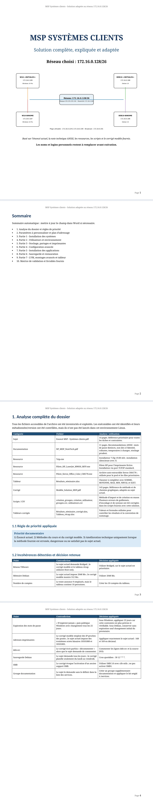
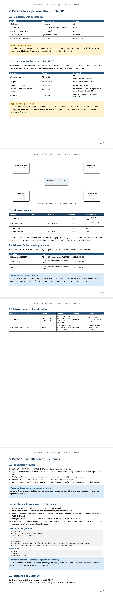
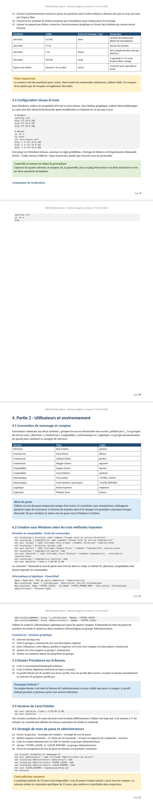
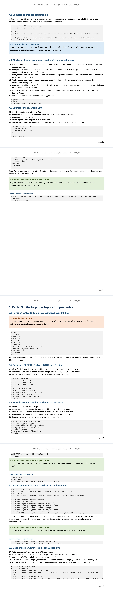
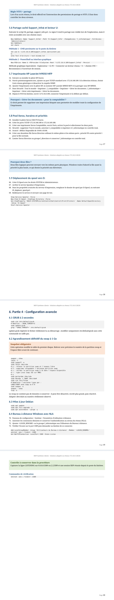
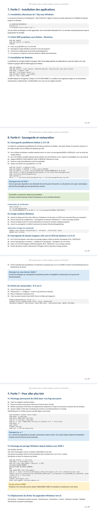
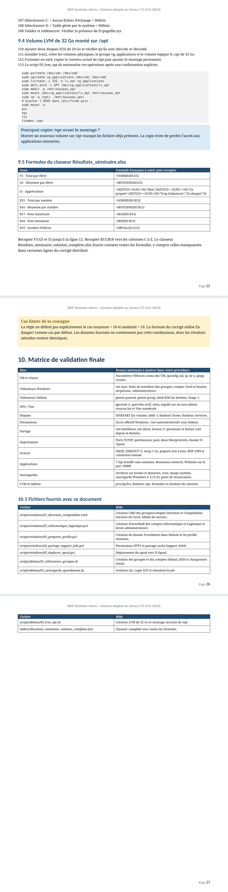
Référence du document : 1_JPJfmmHFM8G1DMi4S2wR1lFDzt0DV_c · SHA-256 7857985d194bb795…
Correction · Modèle_Solution_MSP.pdf · 143 pages
Ouvrir le document intégral Source dans le Drive
Correction originale : à consulter après avoir tenté l’exercice.
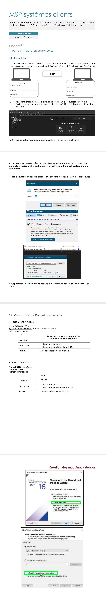
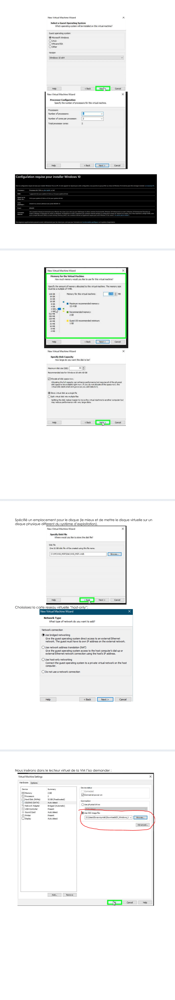
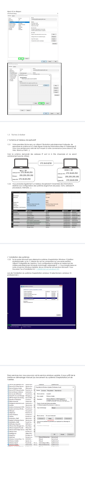
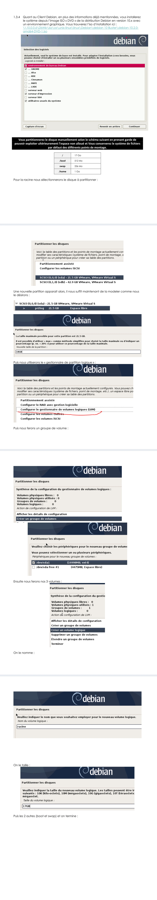
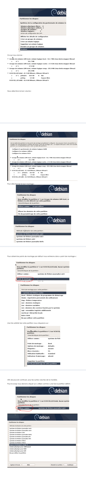
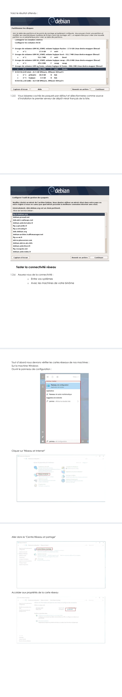
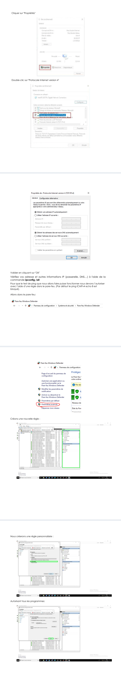
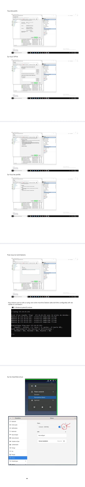
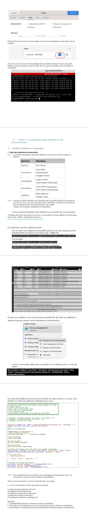
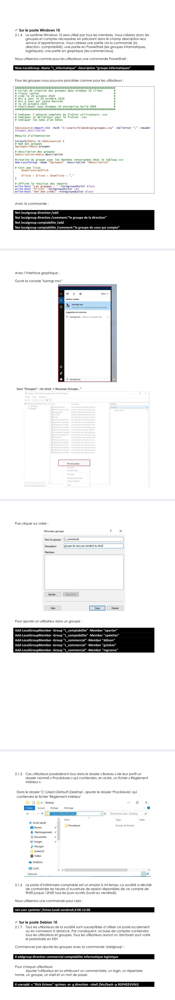
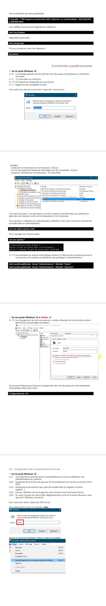
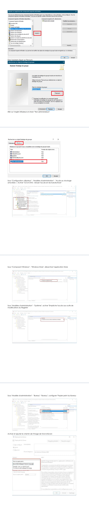
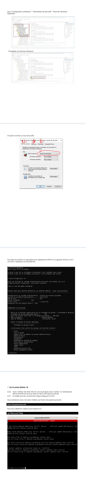
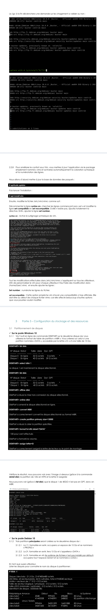
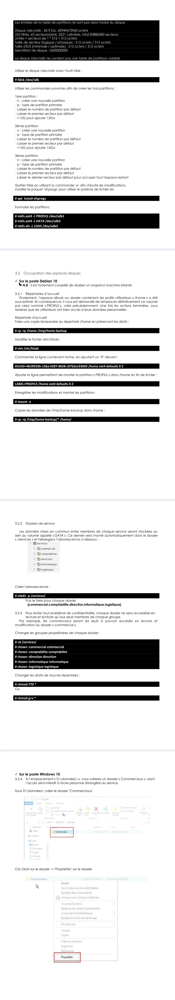
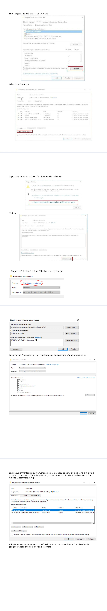
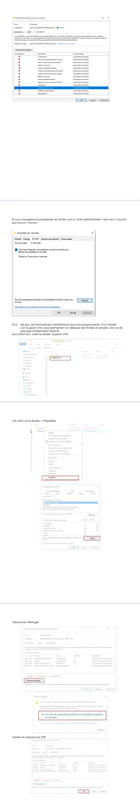
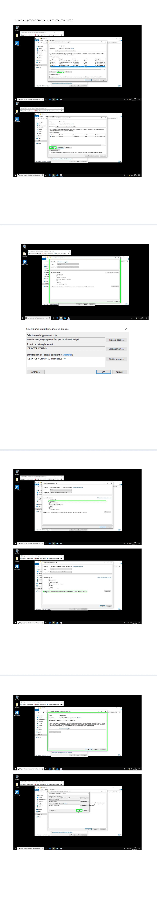
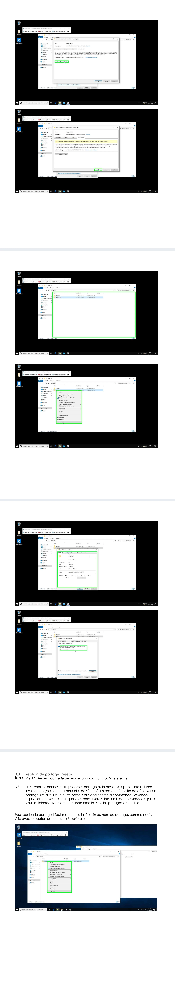
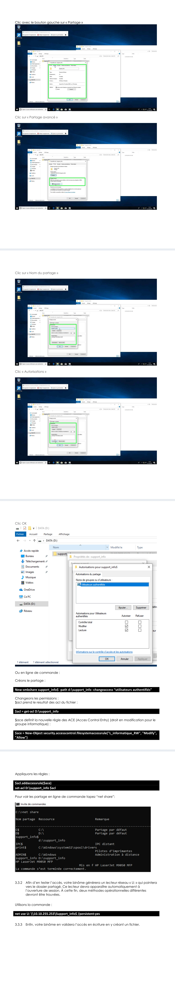
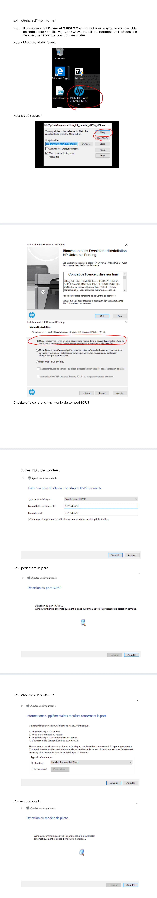
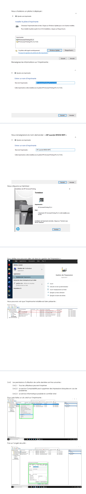
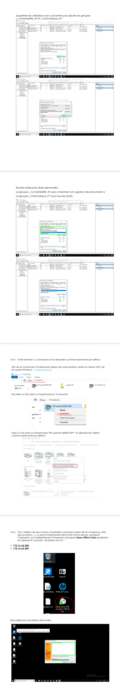
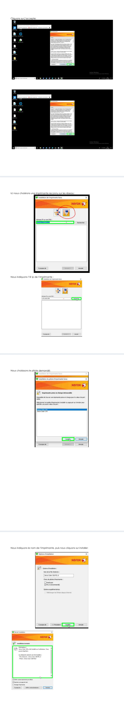
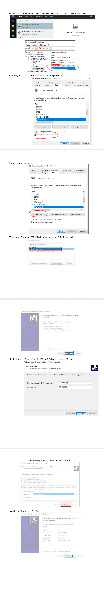
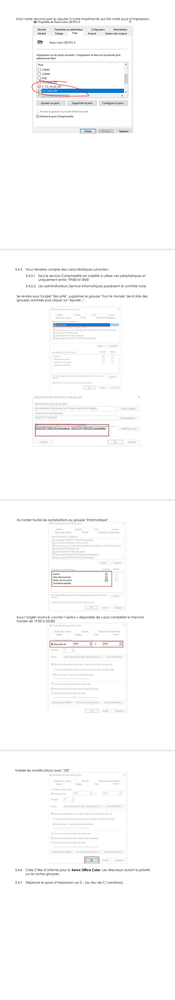
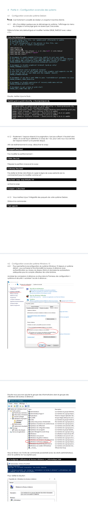
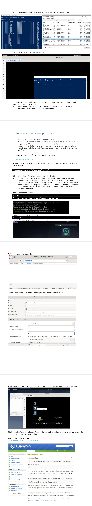
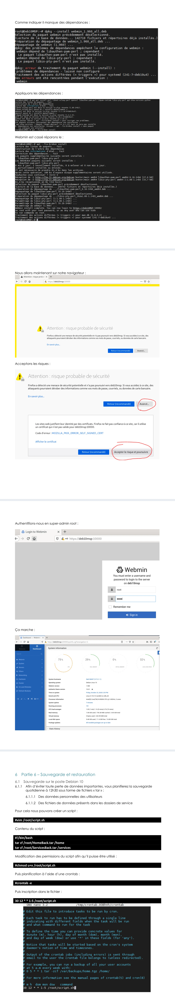
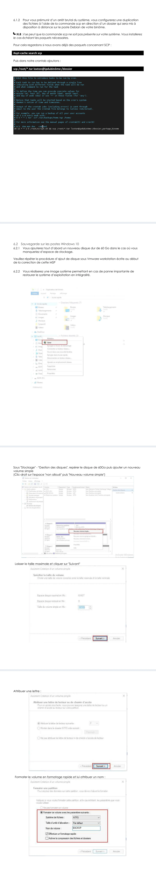
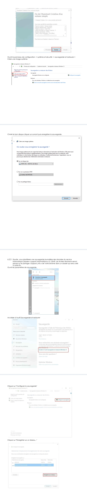
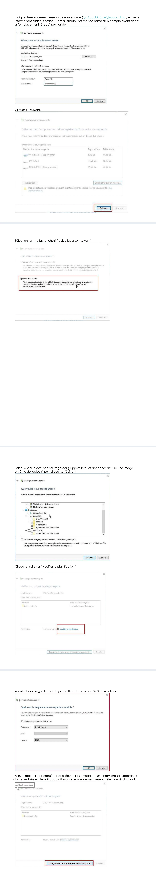
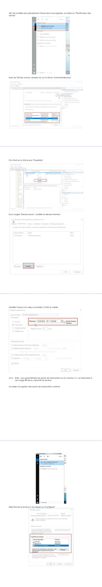
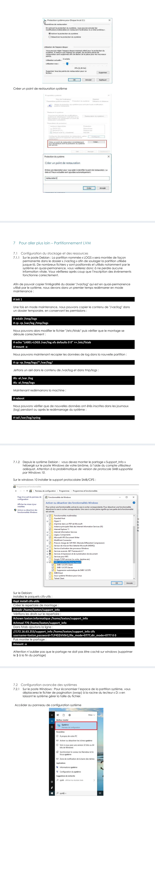
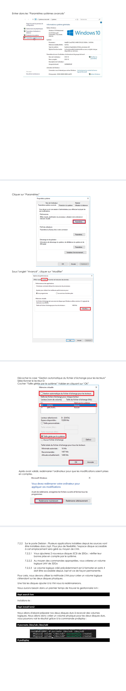
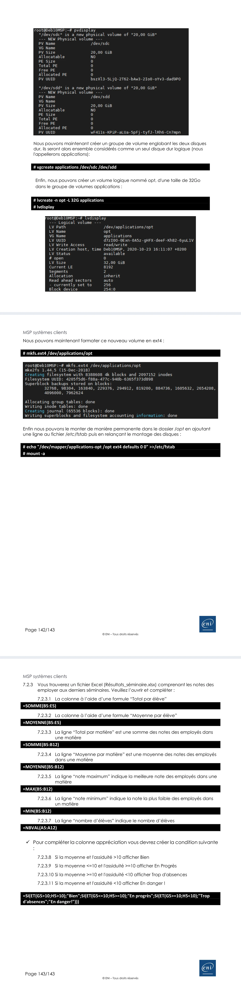
Référence du document : 11FMGV91iFpk7B4zi-mYfv1LrVd3T2vYf · SHA-256 1316bbc9d075426a…
Correction · création_groupes.txt · document texte
Ouvrir le document intégral Source dans le Drive
Notes textuelles présentes dans le Drive. Aucun support de cours illustré distinct n’est fourni pour ce document ; aucune illustration n’a été inventée ou attribuée à ENI.
Correction originale : à consulter après avoir tenté l’exercice.
###############################################################Script de création des groupes dans windows 10 client¶
Tracer Lexton¶
créé le 20 octobre 2020¶
Mis à jour le 20 octobre 2020¶
Mis à jour par Jesse MacCree¶
le 20 octobre 2020¶
Fonctionnel sous Windows 10 entreprise build 2004¶
¶
Indiquer l'adresse complète du fichier utilisateurs .csv¶
Indiquer le délimiteur pour le fichier .csv¶
Indiquer les noms d'en-têtes¶
$datasource=Import-CSV -Path "C:\Users\fx\Desktop\groupes.csv" -Delimiter ";" -Header Groupes,description
Boucle d'alimentation¶
Foreach($data in $datasource) {
Nom des groupes¶
$groupes=$data.Groupes
description des groupes¶
$description=$data.description
creation du groupe avec les données renseignées dnas le tableau csv¶
New-LocalGroup -Name ”$groupes” -Description “$description”
Fait une liste¶
$nomliste=$affich $liste = $liste + $nomliste + ","}
Affiche le résultat des imports¶
write-host "Les groupes : " -ForegroundColor Black write-host "$liste" -foregroundcolor red write-host "ont été créés" -ForegroundColor Black
Référence du document : 1Qdof_W0D8at36EjxjuED_GHUtwvN8tQJ · SHA-256 3fedf75b44295417…
Correction · création_utilisateur.txt · document texte
Ouvrir le document intégral Source dans le Drive
Notes textuelles présentes dans le Drive. Aucun support de cours illustré distinct n’est fourni pour ce document ; aucune illustration n’a été inventée ou attribuée à ENI.
Correction originale : à consulter après avoir tenté l’exercice.
###############################################################Script de création des utilisateurs dans windows 10 client¶
Tracer Lexton¶
créé le 20 octobre 2020¶
Mis à jour le 20 octobre 2020¶
Mis à jour par Jesse MacCree¶
le 20 octobre 2020¶
Fonctionnel sous Windows 10 entreprise build 2004¶
¶
Indiquer l'adresse complète du fichier utilisateurs .csv¶
Indiquer le délimiteur pour le fichier .csv¶
Indiquer les noms d'en-têtes¶
$datasource=Import-CSV -Path "C:\Users\fx\Desktop\utilisateurs.csv" -Delimiter ";" -Header Prénom,Nom,login,mail,password,description
Boucle d'alimentation¶
Foreach($data in $datasource) {
Nom et prénom de famille¶
$Nom=$data.Nom $prenom=$data.Prénom $FullName=$nom + " " + $prenom
Affichage de l'utilisateur¶
$affich=$FullName
Nom de famille¶
$login=$data.login
le mot de passe¶
$password=$data.password
la description¶
$description=$data.description
creation utilisateur avec les toutes les données renseignées¶
New-LocalUser -FullName "$FullName" -Description "$description" -Name "$login" -Password (ConvertTo-SecureString -AsPlainText "$password" -Force)
Fait une liste¶
$nomliste=$affich $liste = $liste + $nomliste + ","}
Affiche le résultat des imports¶
write-host "Les utilisateurs : " -ForegroundColor Black write-host "$liste" -foregroundcolor red write-host "ont été créés" -ForegroundColor Black
Référence du document : 1UUK-587hgViAQPniG-sVpIZoPSGFPE18 · SHA-256 053622e8258b3fd0…
Complément IA / externe au cours — fiche pédagogique du portail
Cette fiche contient une reformulation et des aides d’apprentissage rédigées par IA. Elle est distincte des documents originaux du Drive et ne les remplace pas. Les schémas de synthèse de cette fiche sont des illustrations IA / externes au cours, sauf les captures explicitement attribuées à un document source.
Warning
Une correction décrit le contexte du laboratoire. Comparer la logique et les contrôles avant de reprendre une valeur, une version ou un chemin dans un autre environnement.
MSP_Systemes_clients_solution_172.16.0.128-26¶
MSP Systèmes clients - Solution adaptée au réseau 172.16.0.128/26¶
Solution complète, expliquée et adaptée¶
Réseau choisi : 172.16.0.128/26¶
Basé sur l’énoncé actuel, la note technique ANSSI, les ressources, les scripts et le corrigé modèle fournis. Les noms et logins personnels restent à remplacer avant exécution.
Sommaire¶
- Analyse du dossier et règles de priorité
- Paramètres à personnaliser et plan d’adressage
- Partie 1 - Installation des systèmes
- Partie 2 - Utilisateurs et environnement
- Partie 3 - Stockage, partages et imprimantes
- Partie 4 - Configuration avancée
- Partie 5 - Installation des applications
- Partie 6 - Sauvegarde et restauration
- Partie 7 - LVM, montages avancés et tableur
- Matrice de validation et livrables fournis
- Analyse complète du dossier
Tous les fichiers accessibles de l’archive ont été inventoriés et exploités. Les exécutables ont été identifiés et leurs métadonnées/version ont été contrôlées, mais ils n’ont pas été lancés dans cet environnement Linux.
Catégorie Fichier Analyse / utilisation¶
Sujet Enoncé MSP - Systèmes clients.pdf 14 pages. Référence prioritaire pour toutes les tâches et contraintes.
Documentation NP_MDP_NoteTech.pdf¶
11 pages. Recommandations ANSSI : mots¶
de passe distincts, non liés à l’identité,
robustes, temporaires à changer, stockage¶
prudent.
Ressource 7zip.exe Installateur 7-Zip 19.00 x64 ; installation¶
silencieuse avec /S. Ressource Pilote_HP_LaserJet_M9050_MFP.exe Pilote HP pour l’imprimante fictive. Installation via port TCP/IP standard. Ressource Pilote_Xerox_Office_Color_C60C70.exe Archive auto-extractible Xerox C60/C70 ; utilisée pour le pool et les files prioritaires. Tableur Résultats_séminaire.xlsx Classeur à compléter avec SOMME, MOYENNE, MAX, MIN, NBVAL et SI/ET.
Corrigé Modèle_Solution_MSP.pdf¶
143 pages. Référence de méthode et de¶
chemins graphiques, adaptée au sujet¶
actuel. Scripts / CSV création_groupes, création_utilisateur,
groupes.csv, utilisateurs.csv¶
Méthode d’import et de création en masse. Plusieurs erreurs de guillemets,
d’encodage et de syntaxe ont été corrigées¶
dans les scripts fournis avec cette solution. Tableurs corrigés Résultats_séminaire_corrigé.xlsx,
Tableau_récap.xlsx¶
Valeurs et formules utilisées pour¶
contrôler les résultats et la convention de¶
nommage. 1.1 Règle de priorité appliquée
Priorité documentaire¶
1) Énoncé actuel. 2) Méthodes du cours et du corrigé modèle. 3) Amélioration technique uniquement lorsque
la méthode fournie est erronée, dangereuse ou ne satisfait pas le sujet actuel. 1.2 Incohérences détectées et décision retenue
Point Contradiction Décision appliquée¶
Réseau VMware¶
Le sujet actuel demande Bridged ; le¶
corrigé modèle et le tableau récap¶
utilisent Host-only.
Utiliser Bridged, car le sujet actuel est¶
prioritaire.
Mémoire Debian Le sujet actuel impose 2048 Mo ; le corrigé¶
modèle montre 512 Mo. Utiliser 2048 Mo.
Nombre de comptes Le texte annonce 9 employés, mais le¶
tableau contient 10 personnes. Créer les 10 comptes du tableau.
Point Contradiction Décision appliquée¶
Expiration des mots de passe¶
« N’expirent jamais » puis politique¶
Windows avec changement tous les 25¶
jours.
Sous Windows, appliquer 25 jours car¶
cette contrainte est plus précise et¶
vérifiable. Sous Debian, conserver sans¶
expiration sauf changement initial du¶
prestataire.
Adresses imprimantes¶
Le corrigé modèle emploie des IP proches¶
des postes ; le sujet actuel impose des¶
troisièmes octets binaires 10101000 et¶
10101001.
Appliquer exactement le sujet actuel : 168¶
et 169 en décimal.
deb-src Le corrigé écrit parfois « décommenter »¶
alors que le sujet demande de commenter.
Commenter les lignes deb-src et la source¶
DVD.
Sauvegarde Debian Le sujet demande tous les jours ; le corrigé¶
planifie seulement du lundi au vendredi. Cron quotidien : 30 12 * * *.
SMB Le corrigé évoque l’activation d’un ancien¶
support SMB.
Utiliser SMB 3.0 avec cifs-utils ; ne pas¶
activer SMB1.
Groupe documentation Le sujet le demande sans le définir dans la¶
liste des services.
Créer un groupe supplémentaire¶
documentation et appliquer le bit setgid¶
à /services.
- Paramètres à personnaliser et plan IP
2.1 Remplacements obligatoires
Variable À remplacer par Exemple¶
AB Vos initiales AB¶
jdupont Première lettre du prénom + nom jdupont¶
Jean Dupont Votre identité Jean Dupont¶
mmartin Login de votre binôme mmartin¶
Marie Martin Identité du binôme Marie Martin¶
Avant toute exécution¶
Adapter les identités d’exemple au laboratoire avant d’exécuter les scripts. Ne jamais exécuter une commande de disque avant d’avoir contrôlé le numéro du disque avec list disk, detail disk, lsblk et fdisk -l. 2.2 Calcul du sous-réseau 172.16.0.128/26 Un préfixe /26 laisse 6 bits pour les hôtes : 2^6 = 64 adresses. Le bloc commence à .128 et se termine à .191. La première adresse est le réseau et la dernière est le broadcast, donc 62 adresses sont utilisables.
Élément Valeur Pourquoi¶
Adresse réseau 172.16.0.128 Identifie le sous-réseau ; ne jamais¶
attribuer à une machine. Masque 255.255.255.192 Équivalent décimal du /26. Première IP utilisable 172.16.0.129 Premier hôte possible.
Dernière IP utilisable / passerelle¶
retenue 172.16.0.190 Le corrigé modèle place la passerelle¶
sur la dernière IP utilisable.
Broadcast 172.16.0.191 Adresse de diffusion ; ne jamais¶
attribuer.
Hypothèse de passerelle¶
La passerelle 172.16.0.190 reprend la méthode du corrigé modèle. Si le formateur ou le DHCP fournit une autre passerelle/DNS, conserver les IP des postes mais remplacer la passerelle et le DNS par les valeurs réellement fournies.
2.3 Adresses retenues
Équipement Adresse Masque Passerelle DNS conseillé¶
W10-AB 172.16.0.189 255.255.255.192 172.16.0.190 172.16.0.190 ou DNS¶
fourni¶
DEB10-AB 172.16.0.188 255.255.255.192 172.16.0.190 172.16.0.190 ou DNS¶
fourni¶
W10 du binôme 172.16.0.187 255.255.255.192 172.16.0.190 idem¶
Debian du binôme 172.16.0.186 255.255.255.192 172.16.0.190 idem¶
Les adresses hautes sont retenues pour reproduire la logique du corrigé modèle et limiter le risque d’utiliser les premières adresses souvent réservées. Il faut néanmoins vérifier la plage DHCP avant de les fixer. 2.4 Adresses fictives des imprimantes 10101000₂ = 168 et 10101001₂ = 169. Le sujet impose de conserver le dernier octet du poste concerné.
Périphérique Calcul Adresse¶
HP LaserJet M9050 MFP 172.16 + 168 + dernier octet W10 (.189) 172.16.168.189
Xerox physique 1 172.16 + 168 + dernier octet Debian¶
(.188) 172.16.168.188¶
Xerox physique 2 172.16 + 169 + dernier octet Debian¶
(.188) 172.16.169.188¶
Pourquoi ces IP sont hors du /26 ?¶
Elles sont explicitement annoncées comme fictives. Elles servent à créer les ports TCP/IP et à démontrer la configuration d’impression ; elles ne sont pas destinées à répondre au ping sur votre sous-réseau.
2.5 Tableau des machines virtuelles
Machine CPU Mémoire Disques Réseau Système¶
W10-AB 2 vCPU 4 Go conseillés (2¶
Go minimum)¶
32 Go système + 40¶
Go données + 60 Go¶
sauvegarde si¶
nécessaire¶
Bridged¶
Windows 10¶
Professionnel 64¶
bits¶
DEB10-AB 1 vCPU 2048 Mo¶
20 Go système + 40¶
Go données + 2 x 20¶
Go pour LVM¶
Bridged¶
Debian 10 avec¶
environnement¶
graphique¶
- Partie 1 - Installation des systèmes
3.1 Préparation VMware
- Créer W10-AB et DEB10-AB dans des dossiers distincts.
- Ajouter immédiatement les deux disques demandés, mais installer chaque système uniquement sur le premier
disque.
- Configurer l’interface réseau en Bridged. Ne pas utiliser Host-only malgré le corrigé modèle.
- Monter l’ISO Windows 10 Professionnel la plus récente et l’ISO DVD Debian 10.x.
- Créer un snapshot machine éteinte après chaque grande étape : installation, utilisateurs, stockage, imprimantes.
Pourquoi les snapshots machine éteinte ?¶
Ils permettent un retour fiable avant une opération risquée sur les partitions, /home, /var/log, le swap ou le spool d’impression. 3.2 Installation de Windows 10 Professionnel
- Démarrer sur l’ISO et sélectionner Windows 10 Professionnel.
- Choisir l’installation personnalisée et sélectionner uniquement le disque de 32 Go.
- Créer le compte administrateur initial, appliquer les mises à jour de pilotes nécessaires, puis renommer le poste
W10-AB.
- Configurer IPv4 statiquement avec 172.16.0.189/26, passerelle 172.16.0.190 et le DNS retenu.
- Arrêter Windows Update selon la méthode du cours, puis appliquer la stratégie locale qui interdit la connexion aux
emplacements Windows Update sur Internet.
Chemins de configuration¶
services.msc¶
Service : Windows Update (wuauserv)¶
Type de démarrage : Manuel¶
État : Arrêté¶
gpedit.msc¶
Configuration ordinateur > Modèles d’administration > Composants Windows > Windows Update
Activer : Ne pas se connecter aux emplacements Internet Windows Update¶
Vérification¶
hostname¶
ipconfig /all
sc query wuauserv¶
Pourquoi arrêter le service et ajouter une stratégie ?¶
Le service arrêté satisfait la méthode du corrigé. La stratégie évite qu’un utilisateur ou une tâche ne relance ensuite une connexion aux serveurs Microsoft. 3.3 Installation de Debian 10
- Démarrer l’installation graphique depuis l’ISO DVD.
- Nommer la machine DEB10-AB et configurer l’adresse 172.16.0.188/26.
- Choisir le partitionnement manuel et placer les partitions dans l’ordre indiqué ci-dessous afin que le swap soit suivi
par l’espace libre.
- Conserver les systèmes de fichiers proposés par l’installateur pour chaque point de montage.
- Laisser les paquets par défaut, conserver l’environnement graphique et choisir ftp.fr.debian.org comme miroir
français.
Partition Taille Point de montage / type Remarque¶
/dev/sda1 512 Mo /boot Système de fichiers par¶
défaut de l’installateur. /dev/sda2 17 Go / Racine du système.
/dev/sda3 1 Go /home Sera remplacée plus tard par¶
PROFILS.
/dev/sda4 256 Mo swap À agrandir à 1 Go avec¶
l’espace libre contigu.
Espace non alloué environ 1 Go ou plus aucun Conservé pour agrandir le¶
swap.
Point important¶
Le numéro réel des partitions peut varier. Dans toutes les commandes ultérieures, utiliser lsblk -f et swapon --
show plutôt que de recopier aveuglément /dev/sda4.
3.4 Configuration réseau et tests Sous Windows, utiliser les propriétés IPv4 de la carte réseau. Sous Debian graphique, utiliser NetworkManager. La carte doit être désactivée/réactivée après modification si l’adresse ne se met pas à jour.
# Windows¶
ipconfig /all
ping 172.16.0.188
ping 172.16.0.187
ping 172.16.0.186
# Debian¶
ip -br a
ip route
cat /etc/resolv.conf
ping -c 4 172.16.0.189
ping -c 4 172.16.0.187
ping -c 4 172.16.0.186
Si le ping vers Windows échoue, autoriser la règle prédéfinie « Partage de fichiers et d’imprimantes (Demande d’écho - Trafic entrant ICMPv4) » dans le pare-feu, plutôt que d’ouvrir tous les protocoles.
Contrôle à conserver dans la procédure¶
Capturer les quatre adresses, le masque /26, la passerelle, puis un ping réussi entre vos deux machines et vers les deux machines du binôme.
Commandes de vérification¶
ipconfig /all
ip -br a
ping ...
- Partie 2 - Utilisateurs et environnement
4.1 Convention de nommage et comptes Convention commune aux deux systèmes : groupes locaux en minuscules sans accent, préfixés par l_. Les groupes de service sont l_direction, l_commercial, l_comptabilite, l_informatique et l_logistique. Le groupe documentation est ajouté pour satisfaire la consigne de /services.
Service Nom Login¶
Direction Rick Grimes rgrimes¶
Commercial Daryl Dixon ddixon¶
Commercial Gabriel Stokes gstokes¶
Commercial Maggie Greene mgreene¶
Comptabilité Eugene Porter eporter¶
Comptabilité Carol Peletier cpeletier¶
Informatique Vous-même jdupont¶
Informatique Votre binôme / prestataire mmartin¶
Logistique Rosita Espinosa respinosa¶
Logistique Morgan Jones mjones¶
Mots de passe¶
Utiliser un mot de passe temporaire unique d’au moins 12 caractères, sans nom/prénom, mélangeant plusieurs types de caractères. Le fournir de manière sûre et le changer à la première connexion lorsque demandé. Ne pas réutiliser le même mot de passe entre Windows et Debian. 4.2 Création sous Windows selon les trois méthodes imposées
Direction et comptabilité - Invite de commandes¶
net localgroup l_direction /add /comment:"Groupe local du service Direction"
net localgroup l_comptabilite /add /comment:"Groupe local du service Comptabilite"
net user rgrimes * /add /fullname:"Rick Grimes" /comment:"Direction" /expires:never
net localgroup l_direction rgrimes /add
net user eporter * /add /fullname:"Eugene Porter" /comment:"Comptabilite" /expires:never
net localgroup l_comptabilite eporter /add
net user cpeletier * /add /fullname:"Carol Peletier" /comment:"Comptabilite - interimaire"
/expires:never¶
net localgroup l_comptabilite cpeletier /add
net user cpeletier /times:L-V,09:00-12:00
Le caractère * demande le mot de passe sans l’écrire dans le script. Le fichier 01_direction_comptabilite.cmd fourni reprend ces commandes.
Informatique et logistique - PowerShell¶
$pwd = Read-Host 'Mot de passe temporaire' -AsSecureString¶
New-LocalGroup -Name 'l_informatique' -Description 'Service Informatique'
New-LocalUser -Name 'jdupont' -FullName 'Jean Dupont' -Description 'Informatique -
administrateur' -Password $pwd¶
Add-LocalGroupMember -Group 'l_informatique' -Member 'jdupont'
Add-LocalGroupMember -Group 'Administrateurs' -Member 'jdupont'
Utiliser le script 02_informatique_logistique.ps1 pour les quatre comptes. Il demande les mots de passe de manière sécurisée et ajoute les deux membres informatiques au groupe Administrateurs.
Commercial - Interface graphique¶
- Exécuter lusrmgr.msc.
- Créer le groupe l_commercial avec une description explicite.
- Dans Utilisateurs, créer ddixon, gstokes et mgreene avec leur nom complet et la description Commercial.
- Ajouter les trois comptes au groupe l_commercial.
- Vérifier les membres depuis les propriétés du groupe.
4.3 Dossier Procédures sur le Bureau
- Créer C:\Users\Default\Desktop\Procédures.
- Créer le fichier Règlement intérieur.txt dans ce dossier.
- Le profil Default sert de modèle aux futurs profils. Pour les profils déjà ouverts, recopier le dossier manuellement
ou exécuter 03_preparer_profils.ps1.
Pourquoi Default ?¶
Un simple dossier créé dans le Bureau de l’administrateur ne sera visible que pour ce compte. Le profil Default garantit sa présence pour tout nouvel utilisateur. 4.4 Horaires de Carol Peletier
net user cpeletier /times:L-V,09:00-12:00
net user cpeletier
Sur certains systèmes, les noms de jours sont localisés différemment. Utiliser net help user si la syntaxe L-V est refusée. Le contrôle doit afficher les heures autorisées du lundi au vendredi. 4.5 Stratégie de mots de passe et administrateurs
- Ouvrir secpol.msc > Stratégies de comptes > Stratégie de mot de passe.
- Définir longueur minimale = 12, durée de vie maximale = 25 jours et exigences de complexité = Activées.
- Créer le compte adminsecours en CMD et l’ajouter au groupe Administrateurs.
- Ajouter jdupont et mmartin au groupe Administrateurs.
- Forcer le changement du mot de passe du binôme à la première connexion.
net accounts /minpwlen:12 /maxpwage:25¶
net user adminsecours * /add /fullname:"Administrateur de secours"
net localgroup Administrateurs adminsecours /add
net localgroup Administrateurs jdupont /add
net localgroup Administrateurs mmartin /add
net user mmartin /logonpasswordchg:yes
net accounts¶
Contradiction assumée¶
La politique globale de 25 jours rend impossible « mot de passe n’expire jamais » pour tous les comptes. La solution retient la contrainte spécifique de 25 jours, plus tardive et contrôlable dans secpol.msc.
4.6 Comptes et groupes sous Debian Exécuter le script 01_utilisateurs_groupes.sh après avoir remplacé les variables. Il installe KSH, crée les six groupes, les dix comptes et force le changement initial du binôme.
chmod +x 01_utilisateurs_groupes.sh
sudo ./01_utilisateurs_groupes.sh¶
# Contrôles¶
getent passwd rgrimes ddixon gstokes mgreene eporter cpeletier jdupont mmartin respinosa
mjones¶
getent group l_direction l_commercial l_comptabilite l_informatique l_logistique documentation
chage -l mmartin
Correction du corrigé modèle¶
useradd -p n’accepte pas un mot de passe en clair : il attend un hash. Le script utilise passwd, ce qui est sûr et
fonctionnel. Le fichier correct est /etc/group, pas /etc/groups. 4.7 Stratégies locales pour les non-administrateurs Windows
- Exécuter mmc, ajouter le composant Éditeur d’objet de stratégie de groupe, cliquer Parcourir > Utilisateurs > Non-
administrateurs.
- Configuration utilisateur > Modèles d’administration > Système > Accès au stockage amovible : activer CD et DVD -
Refuser l’accès en lecture et en écriture.
- Configuration utilisateur > Modèles d’administration > Composants Windows > Explorateur de fichiers : supprimer
les fonctions de gravure de CD.
- Configuration utilisateur > Modèles d’administration > Système : activer Empêcher l’accès aux outils de
modification du Registre.
- Configuration utilisateur > Modèles d’administration > Bureau > Bureau : activer Papier peint du Bureau et indiquer
un chemin local lisible par tous.
- Dans la stratégie ordinateur, ouvrir les propriétés du Pare-feu Windows Defender et activer les profils Domaine,
Privé et Public.
- Exécuter gpupdate /force et contrôler avec gpresult /r.
gpupdate /force¶
gpresult /r¶
netsh advfirewall show allprofiles¶
4.8 Sources APT et confort Vim
- Ouvrir /etc/apt/sources.list avec Vim.
- Commenter en une seule commande toutes les lignes deb-src non commentées.
- Commenter la ligne du DVD.
- Mettre à jour la base de paquets et installer vim.
- Activer la coloration, la numérotation et le mode non compatible dans /etc/vim/vimrc.local.
sudo vim /etc/apt/sources.list¶
:g/^\s*deb-src/s/^/#/¶
:g/^\s*deb cdrom:/s/^/#/¶
:wq¶
sudo apt update¶
sudo apt install -y vim¶
sudo tee /etc/vim/vimrc.local >/dev/null <<'EOF'¶
set nocompatible¶
syntax on¶
set number¶
EOF¶
Dans Vim, :g applique la substitution à toutes les lignes correspondantes. Le motif ne cible que les lignes actives, donc il évite de doubler les #.
Contrôle à conserver dans la procédure¶
Capturer le fichier sources.list avec les lignes commentées et un fichier ouvert dans Vim montrant les numéros de lignes et la coloration.
Commandes de vérification¶
grep -nE '^(deb-src|deb cdrom:)' /etc/apt/sources.list || echo 'Toutes les lignes demandées sont
commentées'¶
vim --version | head
- Partie 3 - Stockage, partages et imprimantes
5.1 Partition DATA de 15 Go sous Windows avec DISKPART
Risque de destruction¶
La commande clean n’est pas nécessaire ici et n’est volontairement pas utilisée. Vérifier que le disque sélectionné est bien le second disque de 40 Go.
diskpart
list disk¶
select disk 1
detail disk¶
offline disk¶
online disk¶
convert mbr¶
create partition primary size=15360
format fs=ntfs quick label=DATA¶
assign letter=D¶
list volume¶
exit¶
15360 Mo correspond à 15 Gio. Si le formateur attend la convention du corrigé modèle, size=15000 donne environ 15 Go décimaux. 5.2 Partitions PROFILS, DATA et LOGS sous Debian
- Identifier le disque de 40 Go avec lsblk -o NAME,SIZE,MODEL,TYPE,MOUNTPOINTS.
- Lancer fdisk /dev/sdb et créer trois partitions primaires : +15G, +15G, puis tout le reste.
- Écrire avec w, installer xfsprogs puis formater avec les labels demandés.
sudo fdisk /dev/sdb¶
# n, p, 1, Entrée, +15G¶
# n, p, 2, Entrée, +15G¶
# n, p, 3, Entrée, Entrée¶
# w¶
sudo partprobe /dev/sdb¶
sudo apt install -y xfsprogs¶
sudo mkfs.ext4 -L PROFILS /dev/sdb1¶
sudo mkfs.ext4 -L DATA /dev/sdb2¶
sudo mkfs.xfs -f -L LOGS /dev/sdb3¶
lsblk -f
5.3 Remplacement définitif de /home par PROFILS
- Éteindre la VM et créer un snapshot.
- Démarrer en mode secours afin qu’aucun utilisateur n’écrive dans /home.
- Monter PROFILS temporairement et copier toutes les données avec les droits.
- Commenter l’ancienne ligne /home dans /etc/fstab et ajouter LABEL=PROFILS.
- Redémarrer et vérifier que les comptes retrouvent leurs fichiers.
sudo systemctl isolate rescue.target¶
sudo mkdir -p /mnt/profils¶
sudo mount LABEL=PROFILS /mnt/profils¶
sudo cp -a /home/. /mnt/profils/¶
sudo vim /etc/fstab¶
# Commenter l'ancienne ligne /home¶
# Ajouter :¶
LABEL=PROFILS /home ext4 defaults 0 2¶
sudo reboot¶
Contrôle à conserver dans la procédure¶
Le point /home doit provenir de LABEL=PROFILS et un utilisateur doit pouvoir créer un fichier dans son profil.
Commandes de vérification¶
findmnt /home
df -hT /home¶
su - ddixon -c 'touch ~/test-profils && ls -l ~/test-profils'¶
5.4 Montage de DATA dans /services et confidentialité
sudo mkdir -p /services¶
sudo sh -c 'echo "LABEL=DATA /services ext4 defaults 0 2" >> /etc/fstab'
sudo mount -a¶
sudo mkdir -p /services/{commercial,comptabilite,direction,informatique,logistique}
sudo chown root:documentation /services¶
sudo chmod 2770 /services¶
sudo chown root:l_commercial /services/commercial¶
sudo chown root:l_comptabilite /services/comptabilite¶
sudo chown root:l_direction /services/direction¶
sudo chown root:l_informatique /services/informatique¶
sudo chown root:l_logistique /services/logistique¶
sudo chmod 2770 /services/{commercial,comptabilite,direction,informatique,logistique} Le bit 2 (setgid) force les nouveaux fichiers à hériter du groupe du dossier. À la racine, ils appartiennent à documentation ; dans chaque dossier de service, ils héritent du groupe du service, ce qui permet la confidentialité.
Contrôle à conserver dans la procédure¶
La première commande doit réussir et la seconde doit renvoyer Permission non accordée.
Commandes de vérification¶
su - ddixon -c 'touch /services/commercial/test-ok'¶
su - ddixon -c 'touch /services/comptabilite/test-interdit'¶
5.5 Dossiers NTFS Commerciaux et Support_Info
- Créer D:\donnees\Commerciaux et D:\Support_Info.
- Dans Sécurité > Avancé, désactiver l’héritage et supprimer les autorisations héritées.
- Conserver SYSTEM et Administrateurs en contrôle total.
- Accorder Modifier au groupe l_commercial sur Commerciaux et au groupe l_informatique sur Support_Info.
- Utiliser l’onglet Accès effectif pour tester un membre autorisé et un utilisateur étranger au service.
mkdir D:\donnees\Commerciaux
mkdir D:\Support_Info
icacls D:\donnees\Commerciaux /inheritance:r¶
icacls D:\donnees\Commerciaux /grant:r "SYSTEM:(OI)(CI)F" "Administrateurs:(OI)(CI)F" "l_commercial:(OI)
(CI)M"¶
icacls D:\Support_Info /inheritance:r¶
icacls D:\Support_Info /grant:r "SYSTEM:(OI)(CI)F" "Administrateurs:(OI)(CI)F" "l_informatique:(OI)(CI)M
Règle NTFS + partage¶
Lors d’un accès réseau, le droit effectif est l’intersection des permissions de partage et NTFS. Il faut donc contrôler les deux niveaux. 5.6 Partage caché Support_Info$ et lecteur U: Exécuter le script 04_partage_support_info.ps1. Le signe $ rend le partage non visible lors de l’exploration, mais il reste accessible avec son chemin exact.
New-SmbShare -Name 'Support_Info$' -Path 'D:\Support_Info' -ChangeAccess 'l_informatique' -FullAccess
'Administrateurs'¶
Get-SmbShare
net share¶
Méthode 1 - CMD persistante sur le poste du binôme¶
net use U: \172.16.0.189\Support_Info$ /persistent:yes¶
U:¶
echo Test d'écriture > test-binome.txt¶
Méthode 2 - PowerShell ou interface graphique¶
New-PSDrive -Name U -PSProvider FileSystem -Root '\\172.16.0.189\Support_Info$' -Persist
Méthode graphique équivalente : Explorateur > Ce PC > Connecter un lecteur réseau > U: > chemin UNC > Reconnexion à l’ouverture de session. 5.7 Imprimante HP LaserJet M9050 MFP
- Extraire ou installer le pilote HP fourni.
- Ouvrir printmanagement.msc, ajouter un port TCP/IP standard avec 172.16.168.189. Si la détection échoue, choisir
Carte réseau générique et désactiver la requête SNMP.
- Ajouter l’imprimante avec le pilote HP, la nommer HP LaserJet M9050 MFP et la partager sous HP-M9050.
- Dans Sécurité : Tout le monde = Imprimer ; l_comptabilite = Imprimer + Gérer les documents ; l_informatique =
Imprimer + Gérer cette imprimante + Gérer les documents.
- Depuis le W10 du binôme, ouvrir \172.16.0.189, connecter l’imprimante et la définir par défaut.
Pourquoi « Gérer les documents » pour la comptabilité ?¶
Ce droit permet de supprimer une impression bloquée sans permettre de modifier toute la configuration de l’imprimante. 5.8 Pool Xerox, horaires et priorités
- Installer le pilote Xerox C60/C70 fourni.
- Créer les ports TCP/IP 172.16.168.188 et 172.16.169.188.
- Créer une imprimante Xerox-Comptabilite, ouvrir Ports, activer le pool et sélectionner les deux ports.
- Sécurité : supprimer Tout le monde, autoriser l_comptabilite à imprimer et l_informatique en contrôle total.
- Avancé : définir Disponible de 19:00 à 03:00.
- Créer une deuxième file Xerox-Direction utilisant le même pilote et les mêmes ports ; priorité 99 contre priorité 1
pour la file normale.
- Limiter Xerox-Direction au groupe l_direction et conserver l_informatique en contrôle total.
Pourquoi deux files ?¶
Deux files logiques peuvent envoyer vers les mêmes ports physiques. Windows traite d’abord la file ayant la priorité la plus haute, ce qui donne la priorité aux directeurs. 5.9 Déplacement du spool vers D:
- Créer D:\Spool avec les droits SYSTEM et Administrateurs.
- Arrêter le service Spouleur d’impression.
- Dans les propriétés avancées du serveur d’impression, remplacer le dossier de spool par D:\Spool, ou exécuter
05_deplacer_spool.ps1.
- Redémarrer le service et envoyer une page de test.
Stop-Service Spooler -Force¶
New-Item D:\Spool -ItemType Directory -Force
Set-ItemProperty 'HKLM:\SYSTEM\CurrentControlSet\Control\Print\Printers' -Name DefaultSpoolDirectory
-Value 'D:\Spool'¶
Start-Service Spooler¶
- Partie 4 - Configuration avancée
6.1 GRUB à 2 secondes
sudo vim /etc/default/grub¶
# Modifier : GRUB_TIMEOUT=2¶
sudo update-grub¶
grep '^GRUB_TIMEOUT=' /etc/default/grub
update-grub régénère le fichier réellement lu au démarrage ; modifier uniquement /etc/default/grub sans cette commande ne suffit pas. 6.2 Agrandissement définitif du swap à 1 Go
Snapshot obligatoire¶
Cette opération modifie la table du premier disque. Relever avec précision le numéro de la partition swap et l’espace libre avant de continuer.
swapon --show¶
lsblk -f
sudo swapoff -a¶
sudo fdisk /dev/sda¶
# p : relever la partition swap et l'espace libre¶
# d : supprimer uniquement l'ancienne partition swap¶
# n : recréer la partition swap à 1G dans l'espace disponible¶
# t : type Linux swap (82 sur MBR)¶
# w¶
sudo partprobe /dev/sda¶
sudo mkswap -L SWAP /dev/sda4¶
sudo vim /etc/fstab¶
# Remplacer l'ancienne ligne par :¶
LABEL=SWAP none swap sw 0 0¶
sudo swapon -a¶
swapon --show¶
free -h¶
Le swap ne contient pas de données à conserver : il peut être désactivé, recréé plus grand, puis réactivé. Adapter /dev/sda4 au numéro réellement observé. 6.3 Mise à jour Debian
sudo apt update¶
sudo apt full-upgrade -y¶
sudo apt autoremove --purge -y¶
6.4 Bureau à distance Windows avec NLA
- Panneau de configuration > Système > Paramètres d’utilisation à distance.
- Autoriser les connexions distantes et conserver l’authentification au niveau du réseau (NLA).
- Ajouter mmartin ou le groupe l_informatique aux Utilisateurs du Bureau à distance.
- Vérifier l’écoute sur le port 3389 puis demander au binôme de se connecter.
Add-LocalGroupMember -Group 'Utilisateurs du Bureau à distance' -Member 'mmartin'
netstat -ano | findstr :3389
Get-NetTCPConnection -LocalPort 3389 -State Listen
Contrôle à conserver dans la procédure¶
Capturer la ligne LISTENING sur 0.0.0.0:3389 ou [::]:3389 et une session RDP réussie depuis le poste du binôme.
Commandes de vérification¶
netstat -ano | findstr :3389
- Partie 5 - Installation des applications
7.1 Installation silencieuse de 7-Zip sous Windows La ressource fournie est l’installateur 7-Zip 19.00 x64. L’option /S lance le mode silencieux et /D définit le dossier, à placer en dernier.
cd <DOSSIER_RESSOURCES>
7zip.exe /S¶
"C:\Program Files\7-Zip\7z.exe" i¶
Aucune boîte de dialogue ne doit apparaître, hors éventuelle demande UAC. La seconde commande prouve que le programme est installé. 7.2 Client RDP graphique sous Debian : Remmina
sudo apt update¶
sudo apt install -y remmina¶
remmina¶
- Créer un profil RDP vers 172.16.0.189.
- Renseigner le login Windows autorisé et son mot de passe.
- Conserver la négociation de sécurité automatique/NLA.
- Se connecter et capturer le Bureau Windows affiché dans Remmina.
7.3 Installation de Webmin La méthode du corrigé installe un paquet .deb, laisse dpkg signaler les dépendances, puis les répare avec apt. Utiliser le paquet officiel téléchargé pour Debian.
sudo apt update¶
sudo apt install -y perl openssl libauthen-pam-perl libio-pty-perl apt-show-versions
sudo dpkg -i webmin_*.deb¶
sudo apt --fix-broken install -y¶
sudo systemctl enable --now webmin¶
sudo ss -lntp | grep 10000¶
Accéder depuis le navigateur à https://172.16.0.188:10000/. Le certificat auto-signé provoque un avertissement normal dans ce laboratoire. S’authentifier avec root ou un compte autorisé.
- Partie 6 - Sauvegarde et restauration
8.1 Sauvegarde quotidienne Debian à 12 h 30 Le script 02_sauvegarde_quotidienne.sh crée deux archives tar datées : une pour /home et une pour /services. Il les copie ensuite vers le Debian du binôme par SCP.
- Sur le Debian du binôme, installer openssh-server et créer /srv/sauvegardes/DEB10-AB avec les droits du
compte distant.
- Sur votre Debian, installer openssh-client, générer une clé SSH pour root et copier la clé publique avec ssh-copy-id.
- Adapter REMOTE_USER, REMOTE_HOST et REMOTE_DIR dans le script.
- Tester le script manuellement avant de le planifier.
- Ajouter une tâche cron quotidienne à 12 h 30.
sudo apt install -y openssh-client¶
sudo ssh-keygen -t ed25519 -f /root/.ssh/id_ed25519¶
sudo ssh-copy-id -i /root/.ssh/id_ed25519.pub mmartin@172.16.0.186¶
sudo install -m 700 02_sauvegarde_quotidienne.sh /usr/local/sbin/sauvegarde-msp
sudo /usr/local/sbin/sauvegarde-msp¶
sudo crontab -e¶
30 12 * * * /usr/local/sbin/sauvegarde-msp >> /var/log/sauvegarde-msp.log 2>&1
Pourquoi une clé SSH ?¶
Cron ne peut pas répondre à une demande de mot de passe interactive. La clé permet une copie automatique ;
elle doit être protégée par des permissions strictes.
Contrôle à conserver dans la procédure¶
Les deux archives doivent exister localement et sur la machine distante.
Commandes de vérification¶
sudo crontab -l¶
ls -lh /var/backups/msp
ssh mmartin@172.16.0.186 ls -lh /srv/sauvegardes/DEB10-AB
8.2 Image système Windows
- Ajouter le disque de 60 Go dans VMware, l’initialiser et le formater en NTFS avec une lettre libre, par exemple E:.
- Ouvrir Panneau de configuration > Sauvegarder et restaurer (Windows 7) > Créer une image système.
- Choisir le disque de 60 Go comme destination et inclure les volumes critiques proposés.
- Lancer la sauvegarde et vérifier la présence du dossier WindowsImageBackup.
Alternative en ligne de commande¶
wbadmin start backup -backupTarget:E: -include:C: -allCritical -quiet¶
wbadmin get versions¶
8.3 Sauvegarde du dossier Support_Info vers le W10 du binôme à 12 h 45
- Sur le W10 du binôme, créer dans son partage Support_Info$ un dossier Sauvegarde_W10_AB.
- Ouvrir Sauvegarder et restaurer > Configurer la sauvegarde > Enregistrer sur un réseau.
- Saisir \172.16.0.187\Support_Info$\Sauvegarde_W10_AB et un compte autorisé.
- Choisir Me laisser choisir, sélectionner D:\Support_Info et décocher l’image système.
- Créer la planification quotidienne. Si l’interface ne propose pas 12 h 45, modifier la tâche AutomaticBackup dans le
Planificateur de tâches.
Pourquoi un sous-dossier dédié ?¶
Il évite de mélanger les sauvegardes de plusieurs postes et simplifie la restauration et la preuve de fonctionnement. 8.4 Points de restauration : 8 % sur C:
- Ouvrir Protection du système.
- Sélectionner C: > Configurer > Activer la protection du système.
- Placer l’utilisation maximale à 8 %.
- Créer un point nommé Avant_MSP_Final et vérifier qu’il apparaît.
Enable-ComputerRestore -Drive 'C:\'¶
vssadmin resize shadowstorage /For=C: /On=C: /MaxSize=8%¶
Checkpoint-Computer -Description 'Avant_MSP_Final' -RestorePointType 'MODIFY_SETTINGS'
- Partie 7 - Pour aller plus loin
9.1 Montage permanent de LOGS dans /var/log sans perte
- Créer un snapshot machine éteinte.
- Passer en mode secours pour réduire les écritures dans /var/log.
- Monter la partition LOGS dans un emplacement temporaire et copier les journaux en préservant les attributs.
- Ajouter LABEL=LOGS dans /etc/fstab puis monter la nouvelle partition sur /var/log.
100.Redémarrer et vérifier que de nouvelles lignes sont écrites.
sudo systemctl isolate rescue.target¶
sudo mkdir -p /mnt/logs¶
sudo mount LABEL=LOGS /mnt/logs¶
sudo cp -a /var/log/. /mnt/logs/¶
sudo sh -c 'echo "LABEL=LOGS /var/log xfs defaults 0 0" >> /etc/fstab'
sudo mount -a¶
sudo reboot¶
findmnt /var/log
sudo tail -n 30 /var/log/syslog¶
Pourquoi cp -a ?¶
cp -a conserve propriétaires, groupes, permissions, dates et liens. Une copie simple risquerait d’empêcher
certains services d’écrire leurs journaux. 9.2 Montage du partage Windows depuis Debian avec SMB 3 101.Installer cifs-utils. 102.Créer /mnt/support_info et un fichier d’identifiants root-only. 103.Ajouter le partage caché du W10 du binôme dans /etc/fstab avec vers=3.0 et _netdev. 104.Monter et tester la création d’un fichier.
sudo apt install -y cifs-utils¶
sudo mkdir -p /mnt/support_info¶
sudo tee /root/.smb-support >/dev/null <<'EOF'¶
username=mmartin¶
password=<MOT_DE_PASSE_WINDOWS>
EOF¶
sudo chmod 600 /root/.smb-support¶
sudo sh -c 'echo "//172.16.0.187/Support_Info$ /mnt/support_info cifs credentials=/root/.smb- support,vers=3.0,iocharset=utf8,uid=jdupont,gid=l_informatique,file_mode=0660,dir_mode=0770,_netde
v,nofail 0 0" >> /etc/fstab'¶
sudo mount -a¶
findmnt /mnt/support_info
touch /mnt/support_info/test-debian.txt¶
Ne pas activer SMB1¶
Windows 10 et cifs-utils savent utiliser SMB2/SMB3. SMB1 est obsolète et inutile pour cette tâche. 9.3 Déplacement du fichier de pagination Windows vers D: 105.Système > Paramètres système avancés > Performances > Paramètres > Avancé > Mémoire virtuelle > Modifier. 106.Décocher la gestion automatique.
107.Sélectionner C: > Aucun fichier d’échange > Définir. 108.Sélectionner D: > Taille gérée par le système > Définir. 109.Valider et redémarrer. Vérifier la présence de D:\pagefile.sys. 9.4 Volume LVM de 32 Go monté sur /opt 110.Ajouter deux disques SCSI de 20 Go et vérifier qu’ils sont /dev/sdc et /dev/sdd. 111.Installer lvm2, créer les volumes physiques, le groupe vg_applications et le volume logique lv_opt de 32 Go. 112.Formater en ext4, copier le contenu actuel de /opt puis ajouter le montage permanent. 113.Le script 03_lvm_opt.sh automatise ces opérations après une confirmation explicite.
sudo pvcreate /dev/sdc /dev/sdd¶
sudo vgcreate vg_applications /dev/sdc /dev/sdd¶
sudo lvcreate -L 32G -n lv_opt vg_applications¶
sudo mkfs.ext4 -L OPT /dev/vg_applications/lv_opt¶
sudo mkdir -p /mnt/nouveau_opt¶
sudo mount /dev/vg_applications/lv_opt /mnt/nouveau_opt¶
sudo cp -a /opt/. /mnt/nouveau_opt/¶
# Ajouter l'UUID dans /etc/fstab puis :¶
sudo mount -a¶
pvs
vgs
lvs
findmnt /opt
Pourquoi copier /opt avant le montage ?¶
Monter un nouveau volume sur /opt masque les fichiers déjà présents. La copie évite de perdre l’accès aux applications existantes. 9.5 Formules du classeur Résultats_séminaire.xlsx
Zone Formule française à saisir puis recopier¶
F5 - Total par élève =SOMME(B5:E5)¶
G5 - Moyenne par élève =MOYENNE(B5:E5)¶
I5 - Appréciation =SI(ET(G5>10;H5>10);"Bien";SI(ET(G5<=10;H5>=10);"En
progrès";SI(ET(G5>=10;H5<10);"Trop d'absences";"En danger!")))¶
B15 - Total par matière =SOMME(B5:B12)¶
B16 - Moyenne par matière =MOYENNE(B5:B12)¶
B17 - Note maximum =MAX(B5:B12)¶
B18 - Note minimum =MIN(B5:B12)¶
B19 - Nombre d’élèves =NBVAL(A5:A12)¶
Recopier F5:G5 et I5 jusqu’à la ligne 12. Recopier B15:B18 vers les colonnes C à E. Le classeur Resultats_seminaire_solution_complete.xlsx fourni contient toutes les formules, y compris celles manquantes dans certaines lignes du corrigé distribué.
Cas limite de la consigne¶
La règle ne définit pas explicitement le cas moyenne > 10 et assiduité = 10. La formule du corrigé utilise En danger! comme cas par défaut. Les données fournies ne contiennent pas cette combinaison, donc les résultats attendus restent identiques.
- Matrice de validation finale
Bloc Preuve minimale à insérer dans votre procédure¶
VM et réseau Paramètres VMware, noms des VM, ipconfig /all, ip -br a, pings croisés. Utilisateurs Windows net user, listes de membres des groupes, compte Carol et heures, secpol.msc, Administrateurs. Utilisateurs Debian getent passwd, getent group, shell KSH du binôme, chage -l. GPO / Vim gpresult /r, pare-feu actif, refus regedit sur un non-admin, sources.list et Vim numéroté. Disques DISKPART list volume, lsblk -f, findmnt /home, findmnt /services. Permissions Accès effectif Windows ; test autorisé/interdit sous Debian.
Partage Get-SmbShare, net share, lecteur U: persistant et fichier créé¶
depuis le binôme. Imprimantes Ports TCP/IP, permissions, pool, deux files/priorités, dossier D: \Spool.
Avancé GRUB_TIMEOUT=2, swap 1 Go, paquets mis à jour, RDP 3389 et¶
connexion réussie. Applications 7-Zip installé sans assistant, Remmina connecté, Webmin sur le port 10000. Sauvegardes Archives tar locales et distantes, cron, image système, sauvegarde Windows à 12 h 45, point de restauration. LVM et tableur pvs/vgs/lvs, findmnt /opt, formules et résultats du classeur. 10.1 Fichiers fournis avec ce document
Fichier Rôle¶
scripts/windows/01_direction_comptabilite.cmd Création CMD des groupes/comptes Direction et Comptabilité, horaires de Carol, admin de secours. scripts/windows/02_informatique_logistique.ps1 Création PowerShell des comptes Informatique et Logistique et droits administrateurs. scripts/windows/03_preparer_profils.ps1 Création du dossier Procédures dans Default et les profils existants. scripts/windows/04_partage_support_info.ps1 Permissions NTFS et partage caché Support_Info$. scripts/windows/05_deplacer_spool.ps1 Déplacement du spool vers D:\Spool. scripts/debian/01_utilisateurs_groupes.sh Création des groupes et dix comptes Debian, KSH et changement initial. scripts/debian/02_sauvegarde_quotidienne.sh Archives tar, copie SCP et rétention locale.
Fichier Rôle¶
scripts/debian/03_lvm_opt.sh Création LVM de 32 Go et montage sécurisé de /opt. tableur/Resultats_seminaire_solution_complete.xlsx Classeur complété avec toutes les formules.